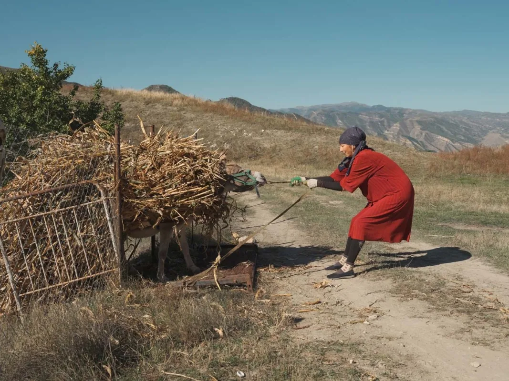
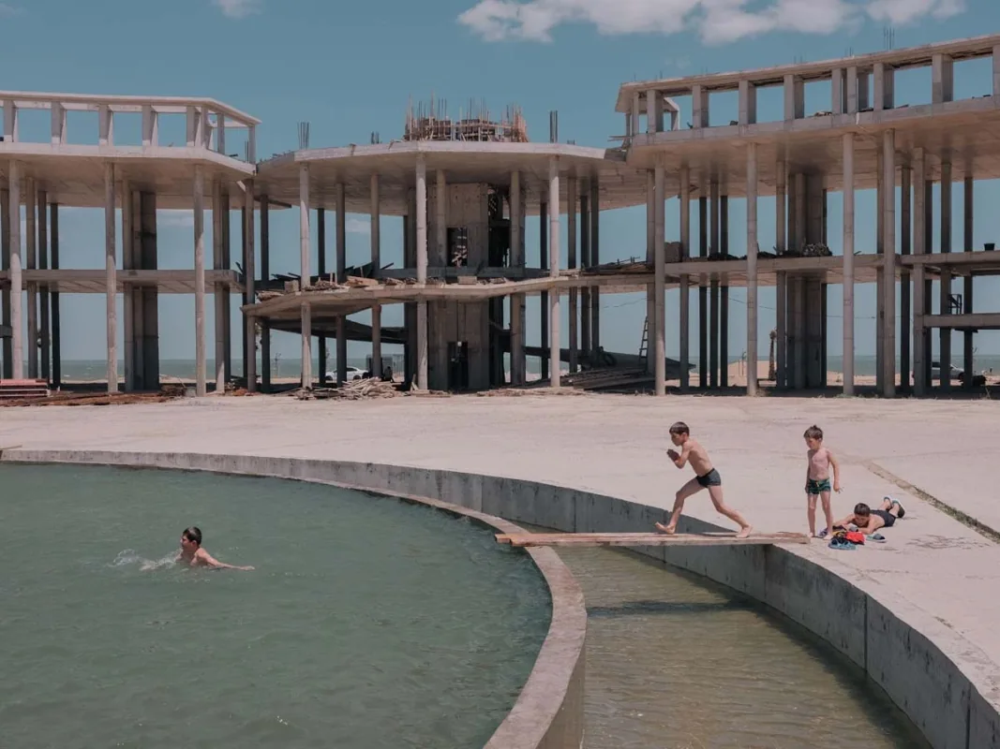
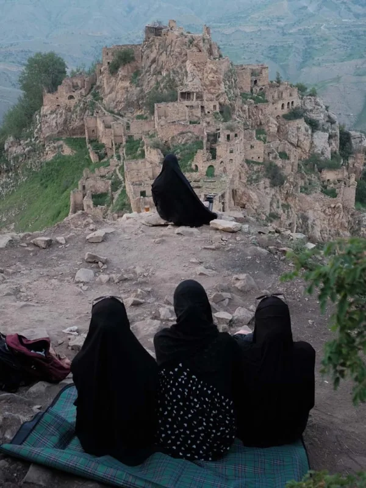
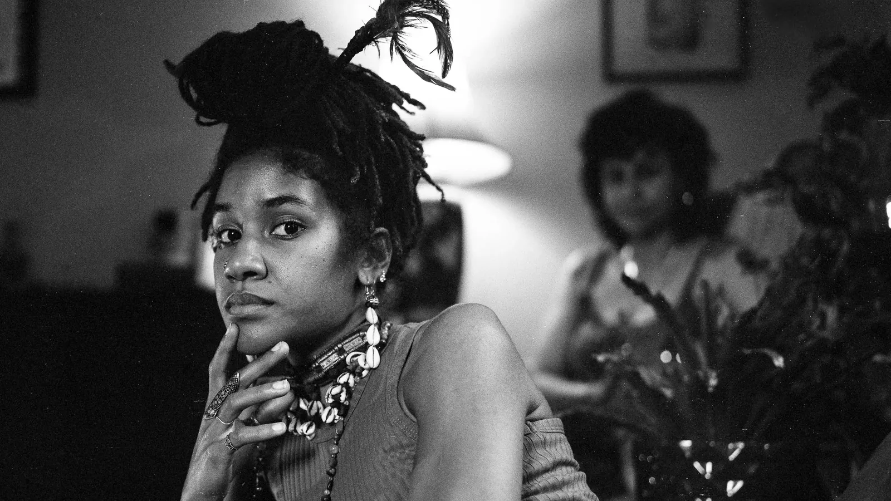
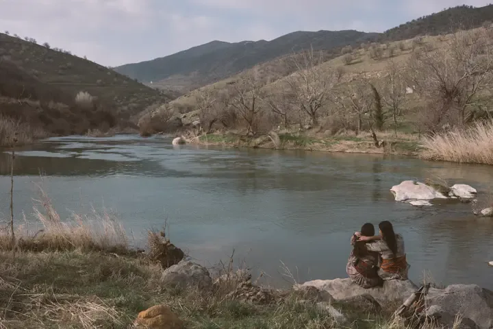

올해 라이카 오스카 바르낙 상(Leica Oskar Barnack Award, LOBA)은 러시아 사진가 다미르 파이줄린(Damir Faizulin)에게 돌아갔다. 수상작은 북캅카스 다게스탄의 산간 지역을 찍은 연작 「Preserving Nature as Preserving Ourselves」다. 라이카는 10월 8일 독일 베츨라르에서 수상자를 발표했다. 수상작 이야기에 앞서, 이 상이 어떤 상인지부터 짚어 둔다. 상의 이름이 곧 35mm 사진의 출발점이기 때문이다.
영화 필름 한 칸을 두 배로
오스카 바르낙(Oskar Barnack, 1879–1936)은 독일 베츨라르의 광학 회사 에른스트 라이츠에서 일한 기술자다. 1911년 정밀 기계공으로 들어가 곧 영화·계측 기술 개발 책임자가 됐다. 그는 당시 영화에 쓰던 35mm 필름의 18×24mm 한 칸을 가로로 두 배 늘려 24×36mm 로 찍는 작은 카메라를 구상했다. 1914년 3월 회사 기록에는 「릴리풋(Liliput)」이라는 이름으로 이 시제품이 완성됐다고 적혀 있다. 지금 우르 라이카(Ur-Leica)라고 부르는 카메라다.
제1차 세계대전으로 양산은 미뤄졌다. 1925년 라이프치히 봄 박람회에서 첫 양산형 라이카 I 이 공개됐고, 1930년까지 5만 7,000대가량 만들어졌다. 오늘날 '풀프레임'이라고 부르는 24×36mm 판형이 여기서 시작됐다. 우리가 필름 카메라에 끼우는 135 필름의 한 컷 크기도 이 크기다.
사람과 환경의 관계를 묻는 상
LOBA 는 바르낙 탄생 100주년이던 1979년을 계기로 만들어져 1980년부터 수상자를 냈다. 주제는 처음부터 하나다. 사람과 그 사람이 사는 환경의 관계를 뛰어난 연작으로 담아낸 사진가에게 준다. 한 장의 사진이 아니라 연작을 본다는 점이 이 상의 성격을 정한다.
지금은 공모가 아니라 추천제로 운영된다. 세계 각지의 사진 전문가들이 작가를 추천하고, 심사위원단이 그 가운데서 고른다. 올해는 130여 명이 400편이 넘는 작업을 추천했고, 8월에 최종 후보 12명이 발표됐다. 공식 수상자 목록에는 2009년부터 신인상(Newcomer) 수상자도 함께 올라 있다. 올해는 여기에 여성 사진가를 위한 지원금이 처음 더해졌다.
세바스치앙 살가두에서 알레한드로 세가라까지
공식 목록을 거슬러 올라가면 다큐멘터리 사진사에서 익숙한 이름이 이어진다. 세바스치앙 살가두는 1985년과 1992년 두 차례 받았다. 크리스 스틸퍼킨스(1988), 유진 리처즈(1993), 잔니 베렝고 가르딘(1995), 래리 토웰(1996)도 이 상을 거쳤다. 2010년대에는 얀 그라루프(2011), JH 엥스트룀(2015)이 이름을 올렸다.
지난해 수상자 알레한드로 세가라는 이 상의 역사에서 처음 나온 사례다. 그는 2014년 신인상을 받았고, 11년 뒤인 2025년 「The Two Walls」로 본상까지 받았다. 신인상에서 본상으로 올라간 사람은 그가 처음이다. 2024년 본상은 다비데 몬텔레오네의 「Critical Minerals」였다.
2026년 수상자, 서른셋까지 링 위에 있었다
올해 본상에는 상금 4만 유로와 1만 유로어치 라이카 장비가 주어진다.
파이줄린의 이력은 사진상 수상자로서는 드문 편이다. 1986년 우즈베키스탄에서 태어났고, 소련이 무너진 뒤 가족과 함께 러시아로 옮겨 갔다. 서른셋이 될 때까지 무술가이자 프로 레슬러로 살았다. 사진은 그 뒤에 시작했다. 칼리닌그라드에서 다큐멘터리 사진가 드미트리 마르코프의 워크숍을 들으며 배웠다.
다게스탄에는 2020년 여행자로 처음 갔다. 이듬해에는 아예 그곳으로 거처를 옮겼다. 그는 이 지역이 곧 빠르게 바뀔 것 같다는 느낌을 받았고, 그것이 작업을 시작한 이유였다고 밝혔다.

관광과 새 건물, 버려지는 옛것
「Preserving Nature as Preserving Ourselves」는 다게스탄 산간 마을이 바뀌는 과정을 따라간다. 관광객이 늘고, 그들을 맞을 새 건물이 들어선다. 그 사이 오래된 집과 풍습은 손길이 끊긴 채 방치된다. 사진에는 자연이 바뀌는 모습과 함께 전통과 문화적 정체성이 달라지는 모습이 담겼다.
그렇다고 고발만 하는 연작은 아니다. 파이줄린은 바뀌는 것들을 기록하면서도 그 땅의 아름다움을 지운 화면을 만들지 않는다. 사람과 풍경 사이의 균형이 깨지는 순간과, 아직 버티고 있는 순간이 같은 연작 안에 나란히 놓인다. 제목이 말하는 것도 그 균형이다. 자연을 지키는 일은 우리 자신을 지키는 일이라는 것이다.


신인상과 첫 LOBA 여성 지원금
신인상(Newcomer)은 미국 사진가 라일라 앤마리 스티븐스(Laila AnnMarie Stevens)가 받았다. 수상작 「Clayton Sisterhood Project」는 뉴욕 퀸스를 떠나 노스캐롤라이나 클레이턴의 땅 한 자리에 함께 집을 꾸린 두 언니와 조카 넷을 찍은 흑백 연작이다. 스티븐스는 스무 살에 뉴욕타임스 일을 시작했고, 뉴욕 패션기술대학(FIT)에서 사진·미디어를 전공했다. 상금 1만 유로와 Leica Q3 를 받는다.
올해 처음 생긴 LOBA 여성 지원금(LOBA Women Grant)은 이탈리아 사진가 발렌티나 시니스(Valentina Sinis)에게 돌아갔다. 이라크 쿠르디스탄에서 이어 가고 있는 작업으로, 고향을 떠나 무장 저항에 나선 쿠르드 여성들을 다룬다. 1만 유로와 Leica Q3, 그리고 작업을 마무리할 수 있도록 돕는 전문 지원이 주어진다.


1980년부터 같은 질문을 던져 온 상에, 올해는 어떤 답이 돌아왔을까? 레슬러였던 사람이 낯선 땅에 살러 가서, 그곳이 바뀌는 모습을 곁에서 지켜봤다. 바르낙이 작은 카메라로 열어 둔 길 위에서, 올해 수상작은 그 땅에 직접 살아 본 사람의 답이다.
정보
- 상 라이카 오스카 바르낙 상(LOBA). 1980년부터, 올해 제46회 · 2026년 10월 8일 독일 베츨라르 발표
- 수상 다미르 파이줄린(Damir Faizulin), 「Preserving Nature as Preserving Ourselves」 · 상금 4만 유로와 1만 유로 상당의 라이카 장비
- 신인상 라일라 앤마리 스티븐스, 「Clayton Sisterhood Project」 · 1만 유로와 Leica Q3
- LOBA 여성 지원금 발렌티나 시니스 · 1만 유로와 Leica Q3, 작업 지원
올해 수상작과 최종 후보 작업은 LOBA 공식 사이트에서, 1980년부터의 수상자는 역대 수상자 목록에서 볼 수 있다.